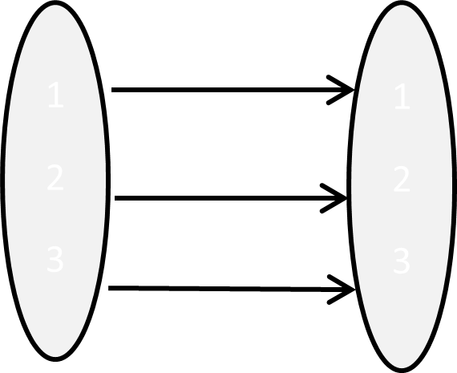
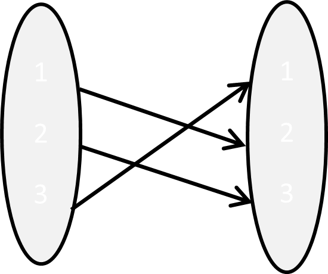
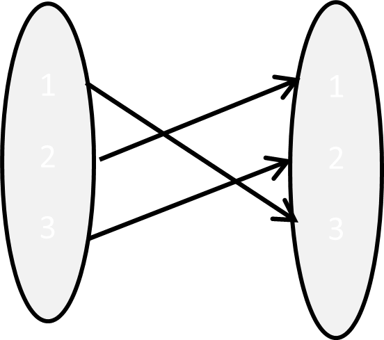
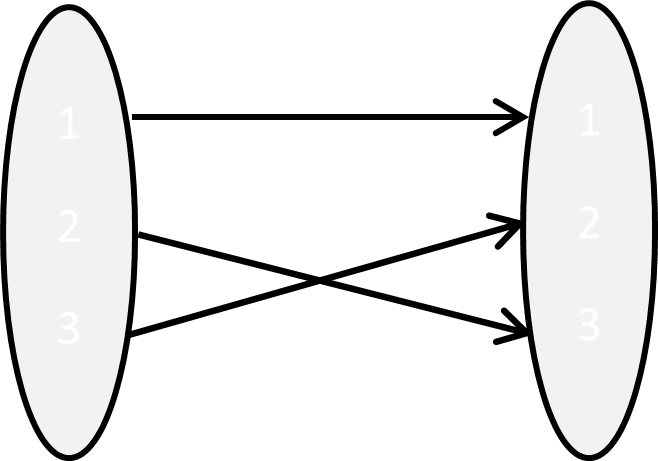
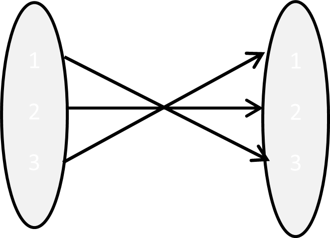
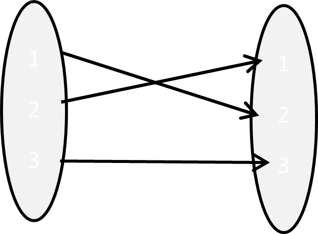
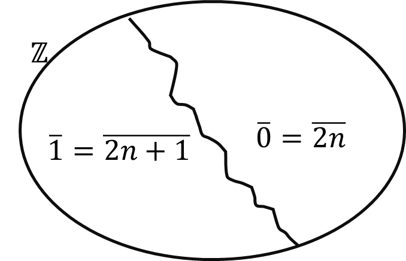

Chapter 6 My note
6.1 Group
Definition 6.1 (group) A group is an ordered pair (\(G\ ,\ \ *)\), where \(G\) is a non-empty set and \(*\) is a binary operation on \(G\) such that the following properties hold:
For all \(a,b\ ,c \in G,\ \ \ a*(b*c) = (a*b)*c\) (associative law)
There exists \(e \in G\) such that for all \(a \in G\), \(a*e = e*a = a\) (existence of an identity)
For all \(a \in G,\ \) there exists \(b \in G\) such that \(a*b = e = b*a\) (existence of an inverse)
\(b\) is called inverse of \(a\) and we write it as \(a^{- 1}\) \[a + ( - a) = 0 ~~~~~~~~~~~~~~~~ a\ .\ \frac{1}{a} = 1\]
Example 6.1
\(\left( \mathbb{Z,\ +} \right)\), \(\left( \mathbb{Q,\ +} \right)\), \(\left( \mathbb{R,\ +} \right)\), \(\left( \mathbb{C,\ +} \right)\)
\(\left( \mathbb{Q\backslash}\text{\{}0\},\ \ \cdot \right)\), \(\left( \mathbb{R\backslash}\text{\{}0\},\ \ \cdot \right)\), \(\left( \mathbb{C\backslash}\text{\{}0\},\ \ \cdot \right)\)
\(\mathbb{\ Z}^{+}\) with operation + is not a group. Because there is no identity element + in \(\mathbb{\ Z}^{+}\).
The set of nonnegative integers (including 0) with operation + is still not a group (no inverse).
\(\mathbb{\ Z}^{+}\) with multiplication is not a group (no inverse).
\((M_{m \times n}\left( \mathbb{R} \right),\ + )\) is a group. \(m \times n\) matrix with all entries 0 is the identity matrix.
Exercise 6.1
Show that \((\mathbb{Q}^{+},\ *\ )\) is a group, where \(a*b = \ \frac{ab}{2}\) for all \(a,\ \ b\ \in \mathbb{Q}^{+}\).
Let \(U_{n} = \left\{ \theta_{n}^{q}\ |\ \theta_{n} = \cos\left( \frac{2\pi}{n} \right) + i\sin\left( \frac{2\pi}{n} \right);q = 0,\ 1,\ldots,n - 1 \right\}\) where \(\theta_{n}^{k} \cdot \theta_{n}^{j} = \theta_{n}^{k + j}\)
Verify that \({(U}_{n},\ \ \cdot \ )\) forms a group. \(U_{n}\) is the nth of unity \(x^{n} = 1\) in \(\mathbb{C}\). Here \(U_{1} = \{ 1\}\), \(U_{2} = \{ - 1,\ 1\}\), \(U_{3} = \{ 1,\ - \frac{1}{2} + \frac{\sqrt{3}}{2}i,\ - \frac{1}{2} - \ \frac{\sqrt{3}}{2}i\}\), \(U_{4} = \{ 1,\ \ i,\ - 1,\ - i\}\)
Definition 6.2 A group G is said to be [finite group if it has finite number of elements. The number of elements in G is called the [order of G and denoted by \(|G|.\)
Example 6.2 \({(U}_{n},\ \ \cdot \ )\)
Definition 6.3 A group G is said to be [abelian group if \(a*b = b*a\) for all \(a,\ b \in G\).
Example 6.3 \(\mathbb{Z,\ Q,\ R\ }and\mathbb{\ C}\) with usual addition are abelian groups.
\(\left( \mathbb{Q\backslash}\text{\{}0\},\ \ \cdot \right)\), \(\left( \mathbb{R\backslash}\text{\{}0\},\ \ \cdot \right)\), \(\left( \mathbb{C\backslash}\text{\{}0\},\ \ \cdot \right)\)
Exercise 6.2 Show that the subset S of \(M_{n}\left( \mathbb{R} \right)\) consisting of all invertible \(n \times n\) matrices with matrix multiplication is a group but not an abelian group.
Example 6.4 Let \(A = \{ 1,\ 2,\ 3\}\)
|  | \[\mathbb{i} = \begin{pmatrix} 1 & 2 & 3 \\ 1 & 2 & 3 \\ \end{pmatrix}\] |
|  | \[\sigma_{1} = \begin{pmatrix} 1 & 2 & 3 \\ 2 & 3 & 1 \\ \end{pmatrix}\] |
|  | \[\sigma_{2} = \begin{pmatrix} 1 & 2 & 3 \\ 3 & 1 & 2 \\ \end{pmatrix}\] |
|  | \[\tau_{1} = \begin{pmatrix} 1 & 2 & 3 \\ 1 & 3 & 2 \\ \end{pmatrix}\] |
|  | \[\tau_{2} = \begin{pmatrix} 1 & 2 & 3 \\ 3 & 2 & 1 \\ \end{pmatrix}\] |
|  | \[ au_3 = \begin{pmatrix} 4 & 5 & 6 \\ 4 & 5 & 6 \\ \end{pmatrix}\] |
| \[\circ\] | \[i\] | \[\sigma_{1}\] | \[\sigma_{2}\] | \[\tau_{1}\] | \[\tau_{2}\] | \[\tau_{3}\] |
|---|---|---|---|---|---|---|
| \[i\] | ||||||
| \[\sigma_{1}\] | ||||||
| \[\sigma_{2}\] | ||||||
| \[\tau_{1}\] | ||||||
| \[\tau_{2}\] | ||||||
| \[\tau_{3}\] |
Lemma 6.1 If (\(G\ ,\ \ *)\) is a group, then
Its identity element is unique.
Every \(a \in G\) has a unique inverse \(a^{- 1} \in G\).
If \(a \in G\), \(\left( a^{- 1} \right)^{- 1} = a\).
For all \(a,\ b \in G\), \((a*b)^{- 1} = b^{- 1}*a^{- 1}\).
\(a*b = a*c\) implies \(b = c{\ \&\ \ b}*a = c*a\) implies \(b = c\) for \(a,\ b,\ c\ \in G\).
Proof.
- Suppose \(e\) and \(f\) are identity elements of G.
\[\begin{align} ae &= a = ea\ \ \ \ \forall a \in G\\ af &= a = fa \ \ \ \ \forall a \in G \end{align}\]
Then \(ef = f\) as \(e\) is an identity and also \(ef = e\) as \(f\) is an identity. Therefore \(e = f\).
- Suppose \(x\) and \(y\) are inverses of \(a\) \[\begin{align} xa &= e = ax \ \ \\ ya &= e = a \end{align}\] This gives \(x = xe = x(ay) = (xa)y = ey = y\)
Hence inverse of \(a\) is unique.
If \(a \in G\), then \(a^{- 1}*a = e = a*a^{- 1}\) and so \(a\) is an inverse of \(a^{- 1}\). Since the inverse of an element is unique in a group and since \(\left( a^{- 1} \right)^{- 1}\) denotes the inverse of \(a^{- 1}\), it follows that \(\left( a^{- 1} \right)^{- 1} = a\).
\[\begin{align} (ab)\left( b^{- 1}a^{- 1} \right) &= e\\ \left( b^{- 1}a^{- 1} \right)(ab) &= e \end{align}\]
\(\therefore(ab)^{- 1} = b^{- 1}a^{- 1}\)
- Suppose \(a*b = a*c\) \[\begin{align} a^{- 1}*a*b &= a^{- 1}*a*c\\ e*b &= e*c\\ b &= c \end{align}\] Similarly, \(b*a = c*a \Rightarrow b = c\).
6.2 Subgroup
Definition 6.4 A non-empty subset \(H\) of a group \(G\) is called a subgroup of \(G\) if \(H\) itself a group relative to the binary operation in \(G\). We shall let \(H \subset G\) denotes that \(H\) is a subgroup of \(G\).
Example 6.5
- \(\left( \mathbb{Z,\ +} \right) \subset \left( \mathbb{R, +} \right)\)
- \(\left( 2\mathbb{Z,\ +} \right) \subset \left( \mathbb{Z, +} \right)\)
- \(\left( \mathbb{Q,\ \ \cdot} \right) ⊄ \left( \mathbb{R, +} \right)\)
- Let \(G\) be a group \(e\) be the identity of \(G\) then \(\left\{ e \right\} \subset G\)
Definition 6.5
- If \(G\) is a group, then the subgroup consisting of \(G\) itself is the
improper subgroup of \(G\).
All other subgroups are proper subgroups. - The subgroup \(\ \left\{ e \right\}\) is the trivial subgroup of \(G\). All other subgroups are nontrivial.
Lemma 6.2 A non-empty subset \(H\) of a group \(G\) is a subgroup if and only if,
\(a*\ b \in H\) (\(\forall a,b \in H\))
\(a^{- 1} \in H\) (for any \(a \in H\))
Proof. (\(\Rightarrow\)) (obvious)
(\(\Leftarrow\)) Suppose we have (i.) and (ii.)
\(H\) is non-empty.
\(a*(b*c) = (a*b)*c\) (\(\forall a,b,\ c \in H\))
Because \(a,b,\ c \in G\)
By (ii.) for any \(a \in H,\ \ a^{- 1} \in H\)
Since \(a\) and \(\ a^{- 1}\) are elements of \(\ H\), by (i.) \(a*a^{- 1} = e\ \in H\)
Hence \(H \subset G\).
Remark.
- \(a*b∈H \forall a,b\in H \Leftrightarrow a^{*}b^{- 1} \in H\)
- \(a^{- 1} \in H\) for any \(a \in H \Leftrightarrow a^{*}b^{- 1} \in H\)
Proof. Homework
Example 6.6 Let \(G\) be a group and \(Z(G) = \left\{ b \in G|\ ab = ba\ \ for\ all\ a \in G \right\}\). Show that \(Z(G)\) is commutative subgroup of \(G\).
Since \(ae = a = ea\) for all \(a \in G,\ \ e \in Z(G)\) and \(Z(G) \neq \phi\).
Let \(a,\ b \in Z(G)\).
Then \(bc = cb\) for all \(c \in G\). \[\begin{align} bc &= cb\\ b^{- 1}bc &= b^{- 1}cb\\ cb^{- 1} &= b^{- 1}cbb^{- 1}\\ cb^{- 1} &= b^{- 1}c \text{ for all } c \in G\\ \end{align}\]
Hence \(b^{- 1} \in Z(G)\).
Now \(\left( ab^{- 1} \right)c = a\left( b^{- 1}c \right) = a\left( cb^{- 1} \right) = ac\left( b^{- 1} \right) = (ac)b^{- 1} = (ca)b^{- 1} = c\left( ab^{- 1} \right)\) for all \(c \in G\).
\(\Rightarrow ab^{- 1} \in Z(G)\)
Hence \(Z(G)\ \subset G\).
By definition \(Z(G)\) is commutative.
\(Z(G)\) is called the center of \(G\).
6.3 Lagrange’s Theorem
Recall
A relation \(\sim\) on \(S\) called an equivalence relation if it satisfies,
\(a \sim a\) for any \(a \in S\) (reflexive)
\(a\sim b \Rightarrow b\sim a\) (symmetric)
\(a\sim b\ \&\ b\sim c \Rightarrow a\sim c\) (transitive)
Example 6.7
- Let \(n> 1\) be fixed integer. Define on \(\mathbb{Z,\ \ }a,b\mathbb{\in Z}\)
\[a\sim b \Leftrightarrow \left. \ n \right|a - b\]
where, \(\sim\) is an equivalence relation.
This relation is called congruence modulo \(n\) and write \(a \equiv b\ (mod\ n)\).
- Let \(G\) be a group and \(H\) be a subgroup of \(G\). For \(a,\ b \in G\) define \(a\sim b \Leftrightarrow ab^{- 1} \in H\).
Show that \(\sim\) is an equivalence relation.
Definition 6.6 If \(\sim\) is an equivalence relation on set \(S\) then \(\overline{a}\) the class of \(a\) is defined by,
\(\overline{a} = \left\{ b \in \left. \ S \right|\ b\sim a \right\}\)
Example 6.8 Define an equivalence relation on \(\mathbb{Z}\) as follows.
\(a\sim b \Leftrightarrow 2|a - b\)
\(\overline{0} = \left\{ y \in \left. \ \mathbb{Z} \right|\ y\sim 0 \right\} = \ \left\{ y\mathbb{\in Z}|\ 2|y \right\} = 2\mathbb{Z}\)
\(\overline{1} = \left\{ y \in \left. \ \mathbb{Z} \right|\ y\sim 1 \right\} = \left\{ y\mathbb{\in Z}|\ 2|y - 1 \right\} = \left\{ y \in \left. \ \mathbb{Z} \right|y = 2k + 1 \right\} =\) set of all odd integers
\(\overline{2} = \left\{ y \in \left. \ \mathbb{Z} \right|\ y\sim 2 \right\} = \left\{ y\mathbb{\in Z}|\ 2|y - 2 \right\} = 2\mathbb{Z}\)

Example 6.9 \(G\) be any group and \(H\) be a subgroup of \(G\). \(a\sim b \Leftrightarrow ab^{- 1} \in H\). Find \(\overline{a}.\)
\(\overline{a} = \left\{ ha\ \right|h \in H\} = Ha\)
Theorem 6.1 If \(\sim\) is an equivalence relation on \(S\) then \(S = \bigcup\overline{a}\) where the union runs over one element from each class and \(\overline{a} \neq \overline{b}\) implies that \(\overline{a} \cap \overline{b} = \phi\)
Proof. Let \(a \in S\). Then \(a \in \overline{a} \subseteq \bigcup\overline{a}\). \(\Rightarrow S \subseteq \bigcup\overline{a}\) Also, \(\bigcup\overline{a\ } \subseteq S\) \(\Rightarrow S = \bigcup\overline{a}\) Let \(a,b \in S\). Suppose \(\overline{a} \cap \overline{b} \neq \phi\). Then there exists \(u \in \overline{a} \cap \overline{b}\). Thus \(u \in \overline{a}\) and \(u \in \overline{b}\). i.e., \(u\sim a\ and\ u\sim b\). Since \(\sim\) is symmetric \(u\sim b\), we have \(b\sim u\). Now \(b\sim u\) and \(u\sim a\) and so transitivity of \(\sim\), \(b\sim a\). This implies that \(b \in \overline{a}\). Hence \(\overline{a} = \overline{b}\).
Theorem 6.2 (Lagrange's Theorem) If \(G\) is a finite group and \(H\) is a subgroup of \(G\), then order of \(H\) divides order of \(G\).
Theorem 6.3 If \(G\) is a group of prime order then \(G\) has only trivial subgroups \(\left\{ e \right\}\) and \(G\).
Proof. \(|G| = p\) – prime
Let \(H \subset G\), then
- \(|H|=1 \Rightarrow H=\left\{ \mathbb{e} \right\}\)
- \(|H|=p \Rightarrow H=G\)
Exercise 6.3 Let \(n> 1\) be a fixed integer. \(a,b\mathbb{\in Z}\). Define \[a\sim b \Leftrightarrow n|a - b \Leftrightarrow a - b \in n\mathbb{Z\ }\]
Find \(\overline{a}\).
Show \(\overline{0,}\ \overline{1},\ \ .\ .\ .,\ \overline{n - 1}\) are disjoint and \(\mathbb{Z =}\overline{0}\ \cup \overline{1} \cup .\ .\ .\ \cup \overline{n - 1}\).
Let \(\mathbb{Z}_{n} = \left\{ \overline{0,}\ \overline{1},\ \ .\ .\ .,\ \overline{n - 1} \right\}\). Show that \(\mathbb{Z}_{n}\) forms a group under the binary operation
\[\overline{x} + \overline{y} = \overline{x + y}\].
Let \(\overline{a},\ \overline{b},\ \overline{c},\ \overline{d} \in \mathbb{Z}_{n}\). Suppose \(\overline{a} = \overline{c}\) and \(\overline{b} = \overline{d}\).
Then \(n|a - c\ and\ n|b - d\).
i.e., \(\exists\ s\ and\ t\) such that \(ns = {a - c}\) and \({nt} = b - d\)
hence \(n(s + t) = (a + b) - (c + d)\) and
\(\left. \ n \right|(a + b) - (c + d)\)
\(\Rightarrow \overline{a + b} = \overline{c + d}\)
Hence + is well defined.
Since \(\left( \overline{a} + \overline{b} \right) + \overline{c} = \overline{a} + \left( \overline{b} + \overline{c} \right)\), + is associative.
Now \(\overline{0} \in \mathbb{Z}_{n}\) and for all \(\overline{a} \in \mathbb{Z}_{n}\)
\(\overline{a} + \overline{0} = \overline{a + 0} = \overline{a} = \overline{0 + a} = \overline{0} + \overline{a}\)
This shows that \(\overline{0}\) is the identity element.
Also, for all \(\overline{a} \in \mathbb{Z}_{n}\), \(\overline{- a} \in \mathbb{Z}_{n}\) and
\(\overline{a} + \overline{- a} = (\overline{a + - a)} = \overline{0} = (\overline{- a + a)} = \overline{- a} + \overline{a}\)
Thus \(\overline{- a}\) is the inverse of \(\overline{a}\).
Hence (\(\mathbb{Z}_{n},\ +\)) is a group.
Is it commutative?
Yes, \(\overline{a} + \overline{b} = \overline{a + b} = \overline{b + a} = \overline{b} + \overline{a}\)
Define multiplication in \(\mathbb{Z}_{n}\) as
\(\overline{a}.\overline{b} = \overline{a.b}\)
Let \(\overline{a},\ \overline{b},\ \overline{c},\ \overline{d} \in \mathbb{Z}_{n}\). Suppose \(\overline{a} = \overline{c}\) and \(\overline{b} = \overline{d}\)
Then \(n|a - c\ and\ n|b - d\)
i.e., \(\exists\ s\ and\ t\) such that \(ns = {a - c\ and}{nt} = b - d\) \[\begin{align} a = ns + c \tag{6.1} \\ b = nt + d \tag{6.2} \end{align}\]
\(a\cdot b = (ns + c)\left( {nt}{+ d} \right) = n^{2}st + nsd + ntc + c\cdot d\)
\(a\cdot b = n\cdot k + c\cdot d\)
\(n\cdot k = a \cdot b - c\cdot d\)
\(\Rightarrow {n\ |\ a\cdot b} - c \cdot d\)
\(\Rightarrow \overline{a \cdot b} = \overline{c \cdot d}\)
Hence \(.\) is well defined.
Since \(\left( \overline{a}\cdot \overline{b} \right)\cdot \overline{c} = \overline{a} \cdot \left( \overline{b} \cdot \overline{c} \right)\), \(\cdot\) is associative.
Now \(\overline{1} \in \mathbb{Z}_{n}\) and for all \(\overline{a} \in \mathbb{Z}_{n}\)
\(\overline{a} \cdot \overline{1} = \overline{a.1} = \overline{a} = \overline{1 \cdot a} = \overline{1} \cdot \overline{a}\)
This implies that \(\overline{1}\) is the identity element.
Does \(\overline{a}\) has an inverse in \(\mathbb{Z}_{n}\) for any \(\overline{a} \in \mathbb{Z}_{n}\)?
No.
If \(\overline{a} \in \mathbb{Z}_{n}\) and \(\overline{a} \neq \overline{0}\), then \(\overline{a}\) has an inverse if and only if gcd(\(a,n\)) = 1.
Proof. Let \(\overline{a} \in \mathbb{Z}_{n}\) and \(\overline{a} \neq \overline{0}\). Suppose gcd(\(a,n\)) = 1.
Then there exists \(b,r\mathbb{\in Z}\) such that \(ab + nr = 1\).
\(\Rightarrow ab - 1 = - nr\)
This implies that \(\overline{ab} = \overline{1}\) or \(\overline{a}.\overline{b} = \ \overline{1}\)
Since \(ab = ba\), \(\overline{b}.\overline{a} = \overline{ba} = \overline{ab} = \ \overline{1}\)
Thus \(\exists\overline{b} \in \mathbb{Z}_{n}\) such that \(\overline{a}.\overline{b} = \ \overline{1} = \ \overline{b}.\overline{a}\) and so \(\overline{a}\) has an inverse.
Conversely suppose \(\overline{a} \in \mathbb{Z}_{n}\), \(\overline{a} \neq \overline{0}\) and \(\overline{a}\) has an inverse.
Then there exists \(\overline{b} \in \mathbb{Z}_{n}\) such that \(\overline{a}\cdot \overline{b} = \overline{1}\).
This implies that \(n\ |\ ab - 1\)
Hence \(ab - 1 = nr\) for some \(r\mathbb{\in Z}\).
Thus \(ab - nr = 1,\ \ \gcd(a,n) = 1\).
Let \(U_{n}\) be the set of all elements of \(\mathbb{Z}_{n} \smallsetminus \left\{ \overline{0} \right\}\) that have an inverse in \(\mathbb{Z}_{n} \smallsetminus \left\{ \overline{0} \right\}\).
i.e., \(U_{n} = \left\{ \overline{a} \in \mathbb{Z}_{n} \smallsetminus \left. \ \left\{ \overline{0} \right\} \right|\gcd(a,n) = 1 \right\}\)
Then \((U_{n},\ \ \cdot )\) is a group.
Example 6.10 If \(n = 6\),
\(\mathbb{Z}_{6} = \left\{ \overline{0},\overline{1},\ \overline{2},\overline{3},\overline{4},\overline{5}\}\ \ \ \ \right.\ \)
\(U_{6} = \left\{ \overline{1,}\ \overline{5} \right\}\)
\(U_{8} = \left\{ \overline{1},\overline{3},\overline{5},\ \overline{7} \right\}\)
\(U_{7} = \left\{ \overline{1},\overline{2},\overline{3},\overline{4,}\overline{5},\ \overline{6} \right\}\)
Let (\(G,\ \ *\)) be a group, \(a \in G\) and \(n\mathbb{\in Z}\). We now define the integral power \(a^{n}\) of \(a\) as follows.
\[\begin{align} a^{0} &= \mathbb{e}\\ a^{n} &= a*a^{n - 1} \text{ if } n 0\\ a^{n} &= \left( a^{- 1} \right)^{- n} \text{ if } n < 0 \end{align}\]
Note that \(a^{n} = \left( a^{- n} \right)^{- 1}\) if \(n < 0\).
Definition 6.7 Let (\(G,\ \ *\)) be a group and \(a \in G\). If there exists a positive integer \(n\) such that \(a^{n} = \mathbb{e}\), then the smallest such positive integer is called the [order] of \(a\). If no such positive integer \(n\) exists, then we say that \(a\) is of infinite order. We denote the order of an element \(a\) by \(O(a)\).
Example 6.11 Consider \(\left( \mathbb{Z}_{6},\ + \right)\), \(\mathbb{Z}_{6}\) has order 6.
\(\overline{0,}\overline{1},\ \overline{2,}\overline{3},\overline{4,}\overline{5}\) have orders 1, 6, 3, 2, 3, 6 respectively.
\({\overline{3}}^{2} = \overline{3} + \overline{3} = \overline{6} = \overline{0}\) and 2 is the smallest positive \(n\) such that \({\overline{3}}^{n} = \overline{0}\).
Theorem 6.4 Let (\(G,\ \ *\)) be a group and \(a\) be an element of \(G\) such that \(O(a) = n.\)
If \(a^{m} = \mathbb{e}\) for some positive integer \(m\), then \(n\) divides \(m\).
For every positive integer \(t\), \(0\left( a^{t} \right) = \frac{n}{\gcd(t,n)}\)
Proof.
By the division algorithm, \(\exists q,\ r\mathbb{\in Z}\) such that \(m = nq + r\ \ \ 0 \leq r < n\). Now $a^{r} = a^{m - nq} = a{m}.a{- nq} = .( a^{n} )^{- q} = .^{- q} = . Since \(n\) is the smallest positive integer such that \(a^{n} = \mathbb{e}\) and \(a^{r} = \mathbb{e}\), it follows that \(r = 0\). Thus \(m = nq\). This implies that \(n\) divides \(m\).
Let \(0\left( a^{t} \right) = k\). Then \(a^{tk} = e.\) By (i.) \(n\) divides \(kt\). Thus \(\exists r\mathbb{\in Z}\) such that \(kt = nr\). Let \(\gcd(t,n) = d\). Then \(\exists u,v\mathbb{\in Z}\) such that \(t = du,\ \ n = \mathbb{d}v\) and \(\gcd(u,v) = 1\) Now \(kt = nr \Rightarrow k\mathbb{d}u = dvr\) \(\Rightarrow {ku} = rv\) Thus \(v\) divides \(ku\). Since \(\gcd(u,v) = 1\), \(v\) divides \(k\). Thus \(\frac{n}{d}\) divides \(k\). Now \(\left( a^{t} \right)^{\frac{n}{d}} = a^{\frac{nt}{d}} = a^{\frac{n\mathbb{d}u}{d}} = a^{nu} = \left( a^{n} \right)^{u} = \mathbb{e}^{u} = \mathbb{e}\). Since \(0\left( a^{t} \right)^{k} = k\), \(k\) divides \(\frac{n}{d}\). Since \(k\) and \(\frac{n}{d}\) are positive integers, \(k = \ \frac{n}{d}\) Hence \(0\left( a^{t} \right) = k = \frac{n}{d} = \frac{n}{\gcd(t,n)}\).
Lemma 6.3 Let \(G\) be a group. If \(a \in G\) and \(O(a) = m,\) then \(A = \left\{ \mathbb{e},a,a^{2},\ .\ .\ .,a^{m - 1}\ \right\}\) is a subgroup of \(G\).
Proof. HW
Theorem 6.5 Let \(G\) be a finite group. Then \(O(a)|\ |G|.\)
Proof. Let \(O(a) = m\)
Take \(A = \left\{ \mathbb{e},a,a^{2},\ .\ .\ .,a^{m - 1}\ \right\}\) We have seen that \(A \subset G\) and \(|A| = m = O(a)\) By Lagrange’s theorem, \(|A|\ |\ |G| \Rightarrow O\left. \ (a) \right|\ |G|\) Since \(O\left. \ (a) \right|\ |G|\), we have \(n = |G| = kO(a)\) \(a^{n} = a^{kO(a)} = \left( a^{O(a)} \right)^{k} = \mathbb{e}^{k} = \mathbb{e}\) Hence we have proved that if \(G\) is a finite group of order \(n,\ then\ a^{n} = \mathbb{e}\) for any \(a \in G\). Hence the order of any element of a finite group is finite.